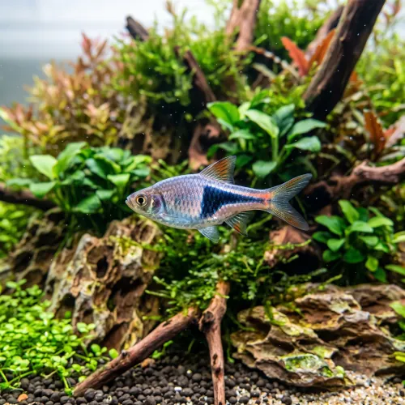

Nome popular principal
Rasbora Arlequim
Rasbora Arlequim, Arlequim, Harlequin Rasbora, Rasbora Espei
Ficha de peixe
Rasboras e Ciprinídeos
Um peixe de cardume clássico, pacífico e elegante que traz harmonia e vibração a qualquer aquário plantado.

Nome popular principal
Rasbora Arlequim, Arlequim, Harlequin Rasbora, Rasbora Espei
Nome científico
Nome técnico essencial para taxonomia, cruzamento de manejo e referência editorial consistente.
Dificuldade de manejo
Use este nível como referência inicial, sempre considerando volume, estabilidade e compatibilidade do aquário.
Seção 1
Seção 2
Seções 4 a 6
Rasbora Arlequim tem hábito alimentar onívoro. Excelente. 1 a 2 vezes ao dia. Aceita prontamente rações secas em micro-flocos ou grãos, adorando pequenos alimentos vivos como dáfnias e artêmias.
Machos têm a mancha triangular preta mais pontiaguda e contorno avermelhado mais vivo; fêmeas têm o abdômen mais arredondado. Tipo de reprodução: Ovíparo. Dificuldade de reprodução: Intermediário. A reprodução é curiosa: a fêmea deposita os ovos de ponta-cabeça na parte inferior de folhas largas, como as de Cryptocoryne.
Alta. Substrato recomendado: Substrato escuro ou areia fina com folhas secas no fundo. Necessidade de esconderijos: Média. Desenvolve sua melhor coloração em aquários bem plantados com vegetação alta, iluminação suave e substrato escuro.
Seção 7
Muito resistente e adaptável, sendo uma das espécies de cardume mais recomendadas para aquaristas de todos os níveis.
Seção 8
Recomenda-se manter um cardume de no mínimo 8 a 10 indivíduos para que se sintam seguros e nadem juntos.
A Rasbora Arlequim (Trigonostigma heteromorpha) é ligeiramente maior e possui a mancha triangular preta mais larga, enquanto a Rasbora Espei tem corpo mais esguio e a mancha em formato de cabo de machado.
O PH ideal situa-se entre 6.0 e 7.2, preferindo água levemente ácida a neutra e de baixa dureza.